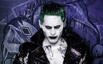
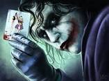

Джокер
джокеру больше семидесяти лет, но его прошлое до сих пор неизвестно.
Возможно, даже он сам уже не помнит, кем он был до той ночи,
когда он надел Красный Колпак, склероз в этом возрасте — распространенное явление.
По признанной канонической версии, человек, ставший Джокером
(возможно, он был неудачливым комедиантом, а, возможно, гангстером), упал в кислоту, испугавшись
Бэтмена, когда в костюме Красного колпака участвовал в ограблении фабрики игральных карт.
В результате он сошёл с ума, получил белую кожу, чёрные тени вокруг глаз
и зелёные волосы, а на лице у него навсегда застыла улыбка
главная страница

